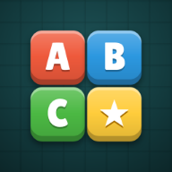
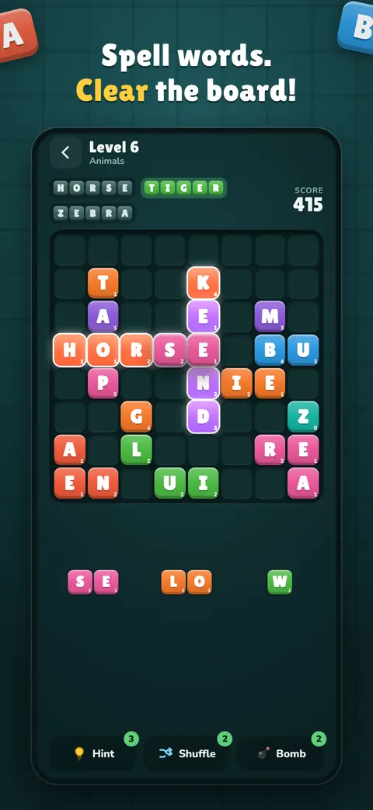
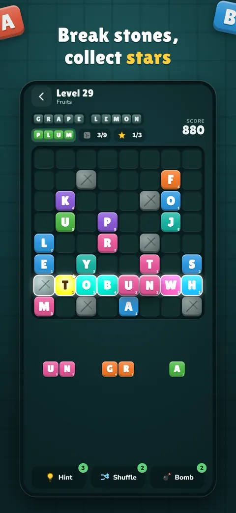
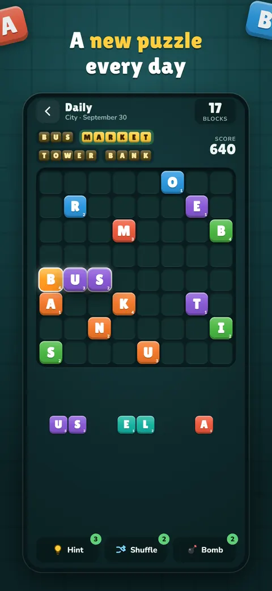
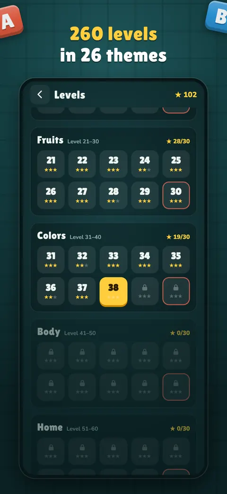
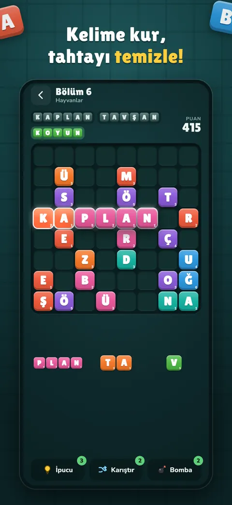
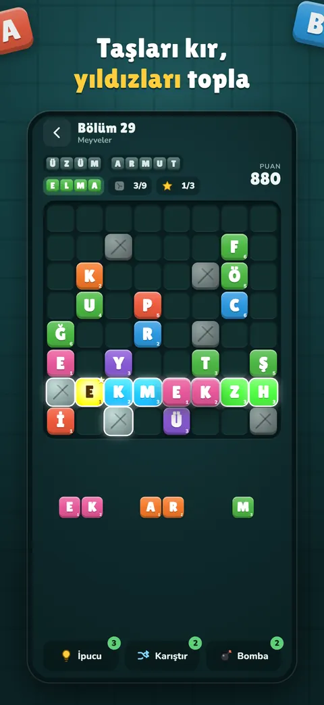
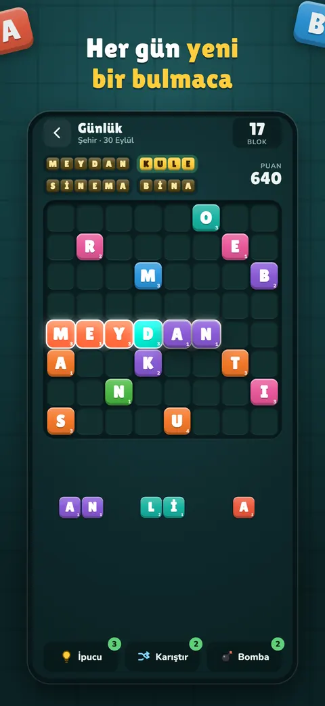
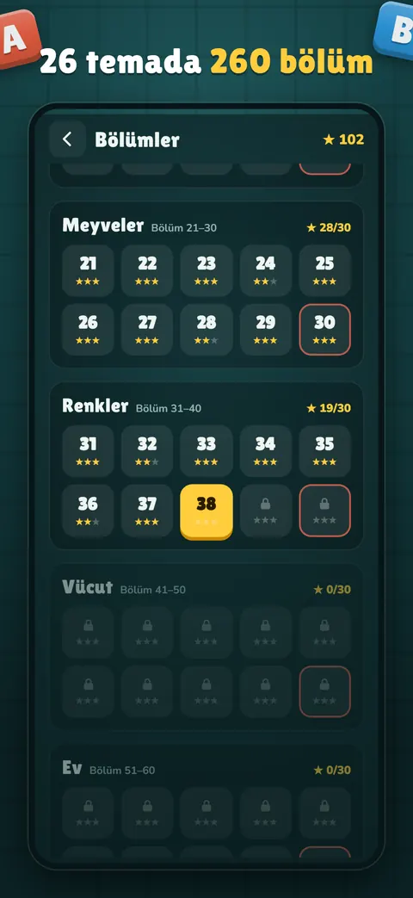

Games / Lexiblok

Word & block puzzle
Lexiblok
Lexiblok mixes two puzzles you already love: a block puzzle and a word game. When the letters on the board spell a word, it clears away.




How to play
- Drag letter blocks onto the 8×8 board.
- Spell a word from left to right or from top to bottom and it clears.
- Fill a whole row or column and it clears too.
- Chain words together to stack up combos.
260 levels in 26 themed chapters
- Animals, Food, Colors, Sports, Space, Music and many more.
- Each chapter asks for its own words and ends with a harder boss level.
- Goals change as you go: spell target words, reach a score, break stones, collect gold star letters, build long words.
- Some levels give you only a few moves, so think ahead.
Daily puzzle and Classic mode
- A new daily puzzle, the same for every player: 30 blocks, bonus words score double, and your day streak keeps growing.
- Classic mode is endless. Keep spelling while the blocks still fit and chase your high score.
Two carefully built word lists
- About 14,800 everyday English words and 9,700 Turkish words.
- Rare words, names and bad language are filtered out.
- Switch languages any time in Settings.
Tips
- Look for short words first. Three- and four-letter words clear often and keep the board open for the long ones.
- A letter can count in two directions. Placing a block where it finishes both a row word and a column word clears both at once.
- Keep vowels spread out. A corner full of consonants is the usual reason a board locks up.
- Rows and columns clear even without a word, so a nearly full line is a safe place for an awkward letter.
- Save the Bomb for stones and dead corners; use Hint when you simply cannot see a word.
Questions
Is Lexiblok free?
Yes. There are no forced ads: you only see an ad when you choose to watch one for a reward.
Can I play in my browser?
Yes, at lexiblok.alaystudio.app. The browser version has no ads.
Does it need an account or internet?
No account is needed, and you can play offline.
Which words count?
Common everyday words from the game’s English or Turkish list. Proper names, abbreviations and offensive words do not count.
Privacy policy
More games from Alay Studio
Oyunlar / Lexiblok
Kelime ve blok bulmaca
Lexiblok
Lexiblok sevdiğin iki bulmacayı birleştiriyor: blok bulmaca ve kelime oyunu. Tahtadaki harfler bir kelime oluşturunca o kelime silinir.




Nasıl oynanır
- Harf bloklarını 8×8 tahtaya sürükle.
- Soldan sağa ya da yukarıdan aşağı bir kelime kur, silinsin.
- Bir satırı ya da sütunu tamamen doldurursan o da silinir.
- Kelimeleri art arda kurup kombolarını büyüt.
26 temada 260 bölüm
- Hayvanlar, Yiyecekler, Renkler, Spor, Uzay, Müzik ve daha fazlası.
- Her temanın kendi kelimeleri var; her tema daha zor bir boss bölümüyle biter.
- Görevler değişir: hedef kelimeleri bul, puan topla, taşları kır, altın yıldızlı harfleri topla, uzun kelime kur.
- Bazı bölümlerde hamle sayın sınırlı, önceden düşün.
Günlük bulmaca ve Klasik mod
- Her gün herkes için aynı yeni bir bulmaca: 30 blok, bonus kelimeler iki kat puan, günlük serin büyür.
- Klasik mod sonsuzdur. Bloklar sığdıkça kelime kurmaya devam et, rekorunu kır.
Özenle hazırlanmış iki kelime listesi
- Türkçede yaklaşık 9.700, İngilizcede 14.800 gündelik kelime.
- Nadir kelimeler, özel isimler ve kaba sözler ayıklandı.
- Dili istediğin zaman Ayarlar’dan değiştirebilirsin.
İpuçları
- Önce kısa kelimelere bak. Üç-dört harfli kelimeler sık silinir ve uzun kelimeler için tahtayı açık tutar.
- Bir harf iki yönde birden sayılabilir. Bir bloğu hem satırdaki hem sütundaki kelimeyi tamamlayacak yere koyarsan ikisi birden silinir.
- Sesli harfleri dağıt. Ünsüzlerle dolu bir köşe, tahtanın kilitlenmesinin en sık sebebidir.
- Satır ve sütunlar kelime olmadan da silinir; neredeyse dolu bir satır, uyumsuz bir harf için güvenli yerdir.
- Bombayı taşlara ve sıkışık köşelere sakla; İpucu’nu bir kelime göremediğinde kullan.
Sorular
Lexiblok ücretsiz mi?
Evet. Zorunlu reklam yoktur: reklamı yalnızca ödül için kendin izlemeyi seçtiğinde görürsün.
Tarayıcıda oynayabilir miyim?
Evet, lexiblok.alaystudio.app adresinde. Tarayıcı sürümü reklamsızdır.
Hesap ya da internet gerekiyor mu?
Hesap gerekmez, internetsiz de oynanır.
Hangi kelimeler geçerli?
Oyunun Türkçe ya da İngilizce listesindeki gündelik kelimeler. Özel isimler, kısaltmalar ve kaba sözler sayılmaz.
Gizlilik politikası
Alay Studio'nun diğer oyunları